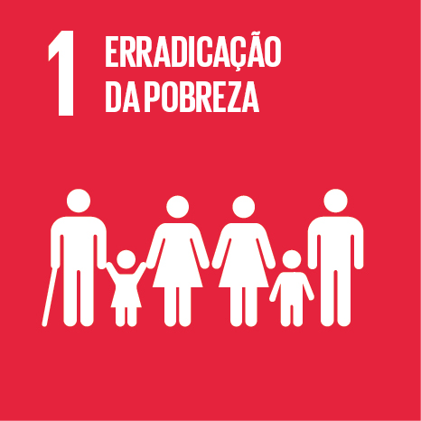

Email: carlos.2005@utfpr.edu.br
Email: carlos.2005@utfpr.edu.br


Rufato Calçados e Confecções
Cargo: Estoquista
Estudante de Engenharia de Software com experiência em manutenção de computadores e interesse em desenvolvimento de sistemas.

Cargo: Estoquista
Estágio no CPD
Assistente administrativo
Automação de análise de documentos